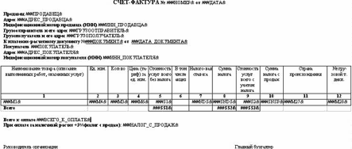

DRKB Explorer
Шаблоны и отчеты MS Word
01.01.2010
Многие популярные информационно-правовые системы содержат шаблоны различных документов в формате Word. Используя их и информацию данной статьи, вы можете легко и быстро создавать отчеты, если пишете свои программы на Delphi. Если пишете на другом языке, это не помеха, описанный подход справедлив к различным языкам.
Когда мы формируем сложный документ по шаблону, и когда в этом шаблоне есть таблицы, количество строк которых в выходном документе может быть произвольным и зависеть от объема информации, то нам недостаточно просто функций создания таблиц и записи в ячейки определенной информации. Для создания такого документа необходимо, как минимум, еще несколько функций работы с таблицами, в перечень которых входит перемещение по таблицам, добавление строк (столбцов) в конец или в середину таблицы. Также необходимо определять размер (количество строк, столбцов) и номер текущего столбца и строки. Чтобы понимать, о чем речь, необходимо просмотреть части 1-3 данной статьи, опубликованных в предыдущих номерах. Для того, чтобы применить свои знания к конкретной задаче, сделаем ее постановку. Например, в нашем документе есть таблица, которая представляет собой шаблон и заполняется из массива информации, который имеет произвольную длину. Таким документом может быть счет-фактура, заголовок которой представляет собой сложную таблицу, средняя часть представляет таблицу переменной длины, а нижняя также представляет сложную таблицу. Для заполнения такого шаблона можно использовать способ, описанный во второй части данной статьи. Этот способ основан на поиске в шаблоне переменных (неповторяющиеся строковые значения длиной 3-5 символов) и подстановке вместо них реальных значений на этапе формирования документа. Поэтому для добавления информации в такую таблицу придется осуществить поиск и позиционирование в строку (по переменной), в которую и перед которой необходимо вставлять строки, и запомнить, в какие колонки какую записывать информацию, но для начала необходимо определить, находится курсор в таблице или нет. Для этого используем свойство Information объекта Selection, в качестве параметра которого будет константа wdWithInTable. В этом случае этот метод возвращает TRUE, если курсор в таблице, или FALSE, если нет. Для использования в нашем приложении создадим функцию GetSelectionTable.Function GetSelectionTable:boolean; const wdWithInTable=12; begin GetSelectionTable:=true; try GetSelectionTable:=W.Selection.Information(wdWithInTable); except GetSelectionTable:=false; end; End;Если в нашем документе может быть более одной таблицы, то, скорее всего, необходима возможность перехода и позиционирование курсора на следующей или предыдущей таблице. Объект Selection дает нам эту возможность через методы GoToNext и GoToPrevious, в этом случае в качестве их параметров должна использоваться константа wdGoToTable.
Function GoToNextTable (table_:integer):boolean; const wdGoToTable=2; begin GoToNextTable:=true; try W.Selection.GoToNext (wdGoToTable); except GoToNextTable:=false; end; End; Function GoToPreviousTable (table_:integer):boolean; const wdGoToTable=2; begin GoToPreviousTable:=true; try W.Selection.GoToPrevious(wdGoToTable); except GoToPreviousTable:=false; end; End;Когда мы позиционируемся на таблице, можем определить количество столбцов и строк в ней. Для этого также используем свойство Information объекта Selection, но в качестве аргументов используем константы wdMaximum Number Of Columns и wdMaximum NumberOfRows.
Function GetColumnsRowsTable(table_:integer; var Columns,Rows:integer):boolean; const wdMaximumNumberOfColumns=18; wdMaximumNumberOfRows=15; begin GetColumnsRowsTable:=true; try Columns:=W.Selection.Information (wdMaximumNumberOfColumns); Rows:=W.Selection.Information (wdMaximumNumberOfRows); except GetColumnsRowsTable:=false; end; End;Кроме размера таблицы, нам может быть необходим номер колонки и строки, на которой позиционирован курсор. Для этого так же используем свойство Information объекта Selection, но в качестве аргументов используем константы wdStartOfRangeColumnNumber, wdStartOfRangeRowNumber. Для реализации этого в Delphi создадим функцию GetColumnRowTable.
Function GetColumnRowTable(table_:integer; var Column,Row:integer):boolean; const wdStartOfRangeColumnNumber=16; wdStartOfRangeRowNumber=13; begin GetColumnRowTable:=true; try Column:=W.Selection.Information (wdStartOfRangeColumnNumber); Row:=W.Selection.Information (wdStartOfRangeRowNumber); except GetColumnRowTable:=false; end; End;После того, как мы нашли таблицу в шаблоне документа и позиционировались на определенной ячейке, нам необходимо выполнить некоторые действия с ней (добавить, вставить строки, записать информацию). Очевидно, что нам нужен будет набор функций для ее модификации. Обычно во время формирования таблицы мы не знаем, сколько будет строк. Они могут добавляться в конец или вставляться в середину таблицы. Если для формирования документа мы используем шаблон таблицы и в нем уже есть, например, заголовок, то нам не обойтись без процедур добавления или вставления строк. Добавить строку в конец таблицы можно, используя метод Add коллекции Rows. Чтобы это сделать из приложения на Delphi, достаточно создать и использовать функцию. Определим ее как AddRowTableDoc.
Function AddRowTableDoc (table_:integer):boolean; begin AddRowTableDoc:=true; try W.ActiveDocument.Tables.Item(table_).Rows.Add; except AddRowTableDoc:=false; end; End;Для того, чтобы вставлять строки в середину таблицы, удобно использовать пару операторов. Первый выделяет строку, перед которой необходимо вставить новую, второй вставляет строку (строки). Смотрите функцию InsertRowsTableDoc.
Function InsertRowsTableDoc(table_,position_, count_:integer): boolean; begin InsertRowsTableDoc:=true; try W.ActiveDocument.Tables.Item(table_).Rows.Item(position_).Select; W.Selection.InsertRows (count_); except InsertRowsTableDoc:=false; end; End;Для добавления одной строки можно использовать также и метод Add коллекции Rows, но с параметром, в качестве которого выступает ссылка на строку, перед которой необходимо вставить новую. Первый оператор получает ссылку на строку, второй вставляет новую. Смотрите реализацию на Delphi (InsertRowTableDoc).
Function InsertRowTableDoc(table_,position_: integer):boolean; var row_:variant; begin InsertRowTableDoc:=true; try row_:=W.ActiveDocument.Tables.Item(table_).Rows.Item(position_); W.ActiveDocument.Tables.Item(table_).Rows.Add(row_); except InsertRowTableDoc:=false; end; End;Когда мы в своем распоряжении имеем набор функций для изменения таблицы, можно приступать к решению задачи - созданию документа типа счета-фактуры на базе шаблона. Полный исходный текст и полную версию шаблона счета-фактуры можно скачать по адресу www.kornjakov.ru/st1_4.zip. Здесь мы рассмотрим фрагмент данного документа. Создадим шаблон - документ формата DOC - и разместим его на диске в каталоге нашего проекта. Внешний вид шаблона смотрите на рисунке.  Здесь будем заполнять только табличную часть. О том, как заполнять остальное, читайте вторую часть данной статьи. Для начала наши новые функции скопируем в библиотеку MyWord, которую мы создавали, начиная с первой части статьи. Затем создадим новый проект, на форме которого разместим кнопку, а в процедуре обработки ее нажатия напишем следующий программный текст.
procedure TForm1.Button1Click(Sender: TObject);
var tablica_:integer;
col_,row_:integer;
a_:integer;
metki_:array[1..12] of record
col:integer;
row:integer;
metka:string;
end;
tovar:array[1..2,1..12] of variant;
begin
// Заполняем массив данными. Массив используется
//для простоты демонстрации, в реальной программе
//данные берутся из базы данных.
tovar[1,1]:='Стул офисный'; tovar[1,2]:='шт.';
tovar[1,3]:=2; tovar[1,4]:=520.00; tovar[1,5]:=1040.00;
tovar[1,6]:='-'; tovar[1,7]:=20; tovar[1,8]:=208.0;
tovar[1,9]:=1248.00; tovar[1,10]:=62.40;
tovar[1,11]:='Россия'; tovar[1,12]:='-';
tovar[2,1]:='Телефон'; tovar[2,2]:='шт.';
tovar[2,3]:=3; tovar[2,4]:=315.25; tovar[2,5]:=945.75;
tovar[2,6]:='-'; tovar[2,7]:=20; tovar[2,8]:=189.15;
tovar[2,9]:=1134.90; tovar[2,10]:=56.70;
tovar[2,11]:='Беларусь'; tovar[2,12]:='-';
if CreateWord then begin
VisibleWord(true);
If OpenDoc(ExtractFileDir (application.ExeName) +'\sf.doc')
then begin
tablica_:=1;
for a_:=1 to 12 do begin
StartOfDoc;
if FindTextDoc('###M'+inttostr(a_)+'&') then
if GetSelectionTable then begin
messagebox(handle,'Находимся в таблице, запоминаем
метку(переменную), номер колонки и строки!',
pchar('Номер колонки/строки = '+inttostr(col_)+'/'+inttostr(row_)),0);
metki_[a_].col:=col_;
metki_[a_].row:=row_;
metki_[a_].metka:='###M'+inttostr(a_)+'&';
end;
end;
Messagebox(handle,'Заполняем первую строку','',0);
for a_:=1 to 12 do begin
SetTextToTable(tablica_,metki_[a_].row,metki_[a_].col,tovar[1,a_]);
end;
a_:=1;
Messagebox(handle,'Добавляем строку','',0);
InsertRowTableDoc(tablica_, metki_[a_].row);
Messagebox(handle,'Заполняем вторую строку','',0);
for a_:=1 to 12 do begin
SetTextToTable(tablica_,metki_[a_].row,metki_[a_].col,tovar[2,a_]);
end;
SaveDocAs(ExtractFileDir(application.ExeName)+'\Счет - фактура.doc');
Messagebox(handle,'Текст сохранен','',0);
CloseDoc;
end;
Messagebox(handle,' Текст закрыт','',0);
CloseWord;
end;
end;
Мы сформировали фрагмент сложного документа, но вы, возможно, захотите в дальнейшем сами развивать эту тему и использовать все возможности Word.Application. В следующей части я постараюсь на примерах объяснить, каким образом это сделать. По всем вопросам вы можете обратиться к автору по адресу www.kornjakov.ru или _kvn@mail.ru.
Василий КОРНЯКОВ
Литература: Н. Елманова, С. Трепалин, А. Тенцер "Delphi 6 и технология COM" "Питер" 2002.